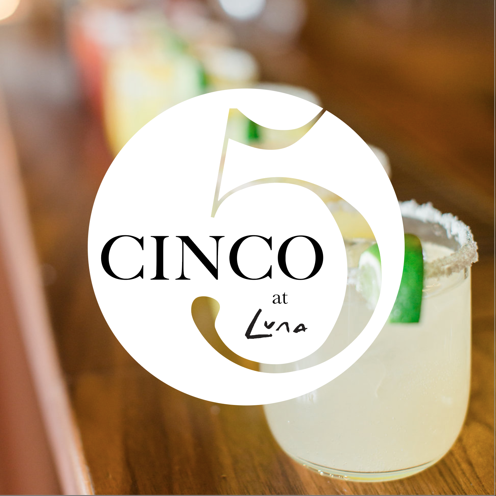
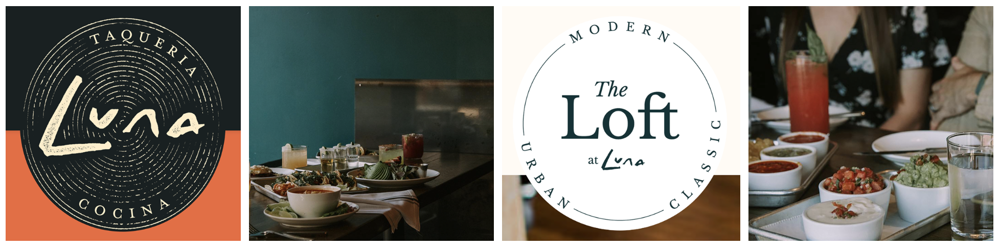
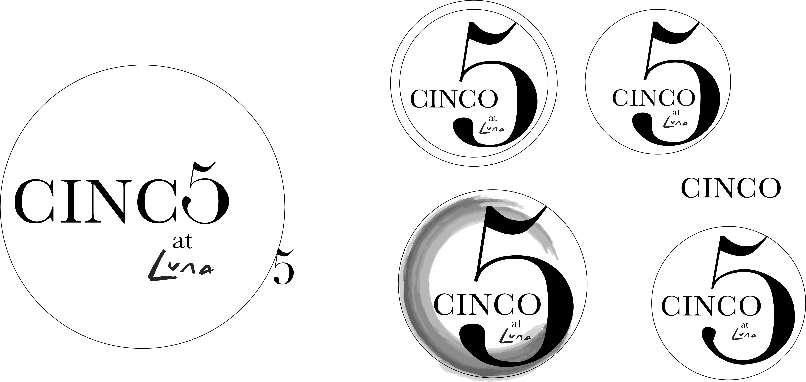
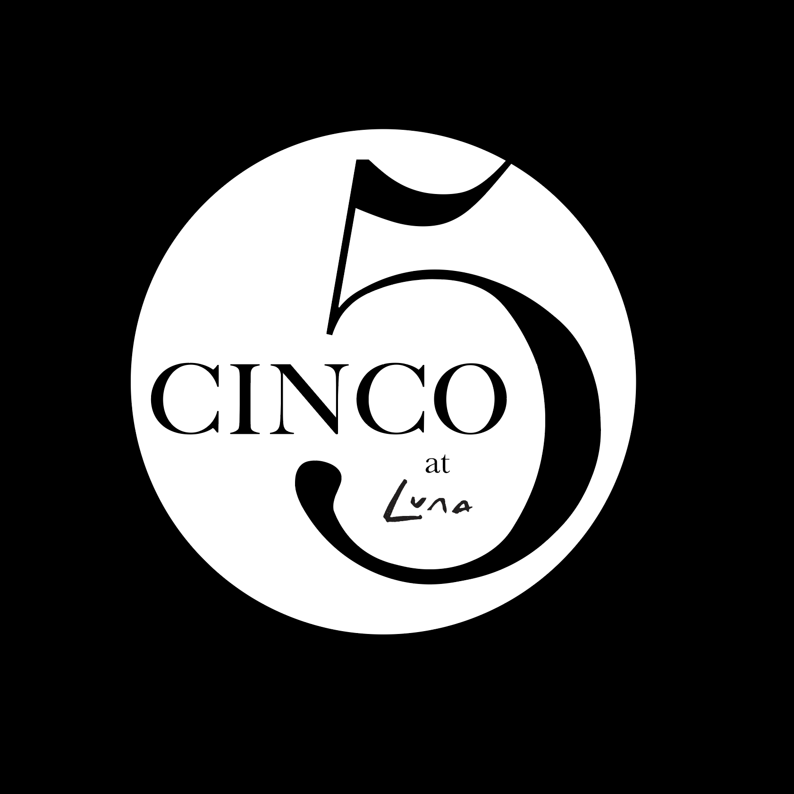

Grace Jermstad
Cinco Logo
A freelance project to craft a logo for a new venue, seamlessly integrating with the company's established branding while effectively capturing the unique ambiance and character of the new venue space.
The Task
Create a logo for Luna restaurant group's new venue Cinco. The logo must harmonize with the existing branding associated with the company.
Existing Media
Sketches and Ideation
After looking over Luna's existing logos and imagery, I began to ideate logo ideas that would seamlessly integrate into the brand identity.
The Final Logo
